Tutorial 2: Landscape-scale connectivity, matrix permeability and dispersal behaviour
In this second example, RangeShiftR is used at the landscape scale to model functional connectivity of a woodland network for a hypothetical woodland species. The aims are:
- to illustrate how the platform can be used to investigate connectivity issues as well as species spatial dynamics at local and landscape scales;
- to show how the platform can run a model as patch-based;
- to show how additional complexity in the population dynamics and dispersal behaviour can be incorporated;
- and to show how the connectivity analyses can be dependent upon the type of model and on the modelled dispersal behaviour.
We want to reproduce Figure 3 of Bocedi et al. (2014). To this end, we run four different scenarios:
- Explicit sexual model. Constant per-step mortality probability of 0.01; individuals settle only if at least one individual of the opposite sex is present in the patch (Figure 3b in the paper).
- As in (a), but with different settlement rules. Females settle in suitable patches, while males will settle only if at least one female is present in the patch (Figure 3c in the paper).
- Only-female model. Constant per-step mortality probability of 0.01; females settle in suitable patches (Figure 3d in the paper).
- As in (a), but with habitat-specific per-step mortality (Figure 3e in the paper).
Bocedi et al. (2014) defined the measures ‘final probability of occupancy’ and the ‘mean time to first colonisation’ to illustrate the connectivity between the initial patch and the rest of the woodland network. These measures allow rapidly assessing the effects of landscape characteristics and species movement abilities on connectivity and, importantly, also on the population dynamics. Note that both measures represent multi-generation connectivity.
1 Getting started
1.1 Create a RS directory
We need to set up the folder structure again with the three sub-folders named ‘Inputs’, ‘Outputs’ and ‘Output_Maps’.
library(RangeShiftR)
library(raster)
library(RColorBrewer)
library(rasterVis)
library(latticeExtra)
library(viridis)
library(grid)
library(gridExtra)
# relative path from working directory:
dirpath = "Tutorial_02/"
dir.create(paste0(dirpath,"Inputs"), showWarnings = TRUE)
dir.create(paste0(dirpath,"Outputs"), showWarnings = TRUE)
dir.create(paste0(dirpath,"Output_Maps"), showWarnings = TRUE)Copy the input files provided for exercise 2 into the ‘Inputs’ folder. The files can be downloaded here.
1.2 Landscape parameters
We use a typical British lowland, agricultural landscape having small fragments of woodland, as used by Forest Research, UK, in Watts et al. (2010). The landscape map has an extent of 10km by 6km and a resolution of 10m. Land-covers were aggregated into seven categories (Figure 3a in Bocedi et al. (2014)). Similar to tutorial 1, the map, landscape_10m_batch.txt, is a raster map with codes for different land-cover types. Land-covers were aggregated into seven categories which have to be given as sequential integer numbers, starting from one:
- 1 = semi-natural broad-leaved woodland
- 2 = planted/felled broad-leaved and mixed woodland, shrubs and bracken
- 3 = heathland, marshy grassland
- 4 = unimproved grassland, mire
- 5 = planted/felled coniferous woodland, semi-improved grassland, swamp
- 6 = improved grasslands, arable, water
- 7 = roads, buildings
landsc <- raster(paste0(dirpath, "Inputs/landscape_10m_batch.txt"))
# Plot land cover map and highlight cells with initial species distribution - option 2 with categorical legend:
landsc.f <- as.factor(landsc)
# add the land cover classes to the raster attribute table
rat <- levels(landsc.f)[[1]]
rat[["landcover"]] <- c("semi-natural broad-leaved woodland", "planted/felled broad-leaved and mixed woodland", "heathland, marshy grassland", "unimproved grassland", "planted/felled coniferous woodland", "improved grasslands, arable, water", "roads, buildings")
levels(landsc.f) <- rat
levelplot(landsc.f, margin=F, scales=list(draw=FALSE), col.regions=brewer.pal(n = 7, name = "Spectral"))
The second text file, woodland_1ha_patchIDs.txt, contains the patch-matrix landscape. It has the same extent and resolution as the land-type map, and each cell contains a unique patch ID that indicates to which patch it belongs. Patch number 0 designates the matrix patch, i.e. all unsuitable habitat.
patch <- raster(paste0(dirpath, "Inputs/woodland_1ha_patchIDs.txt"))
# We can have a glimpse at how many cells the different patches contain:
table(values(patch))##
## 0 1 2 3 4 5 6 7 8 9 10
## 585734 287 232 243 996 240 238 181 141 990 162
## 11 12 13 14 15 16 17 18 19 20 21
## 221 311 207 594 694 118 137 172 245 361 423
## 22 23 24 25 26 27 28 29 30 31 32
## 349 145 1141 138 401 280 336 706 1919 249 154
## 33 34 35 36 37 38 39 40 41 42 43
## 166 524 215 1277 383 735 113 1008 447 125 100
## 44 45 46 47 48 49 50
## 547 116 225 675 189 110 301# Plot the patches in different colours:
levelplot(patch, margin=F, scales=list(draw=FALSE), at=0:50, colorkey=F,
col.regions = c('black',rep(brewer.pal(n = 12, name = "Paired"),5))
) 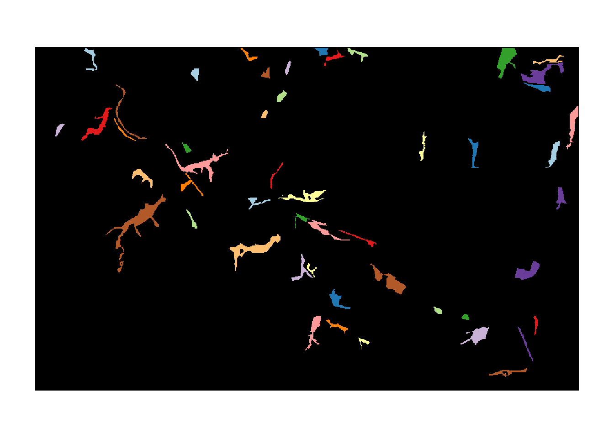
The last text file, patch30.txt, is a map that specifies the patches that contain the initial distribution of the species. In our case, this is only the patch with ID 30.
patch30 <- raster(paste0(dirpath, "Inputs/patch30.txt"))
# Look at initial patch:
plot(patch30)
We are ready to set up the landscape parameter object with these maps, their respective resolutions, and the demographic density dependence for all land cover types. In contrast to tutorial 1, we will use a stage-structured population model here (defined below), so that the values in K_or_DensDep will be used as the parameter 1/b in the population dynamics (see ?StageStructure), describing the strength density dependence (in fecundity, development and survival).
We choose to define only ‘semi-natural broad-leaved woodland’ (code 1) as suitable for our species.
land <- ImportedLandscape(LandscapeFile = "landscape_10m_batch.txt",
PatchFile = "woodland_1ha_patchIDs.txt",
Resolution = 10,
Nhabitats = 7,
K_or_DensDep = c(10, rep(0,6)),
SpDistFile = "patch30.txt",
SpDistResolution = 10)2 Scenario a: sexual model with mate finding
2.1 Demographic and dispersal parameters
We will simulate a sexual species with simple, two-staged structured population dynamics. The parameters are chosen to be representative of species having moderately high fecundity, high juvenile mortality and low adult mortality. This is encoded in the following transition matrix
(trans_mat <- matrix(c(0, 1, 0, 0, 0.1, 0.4, 5, 0, 0.8), nrow = 3, byrow = F))## [,1] [,2] [,3]
## [1,] 0 0.0 5.0
## [2,] 1 0.1 0.0
## [3,] 0 0.4 0.8The first row and column describe the juvenile stage, the others the two adult stages. Juveniles will develop to the first adult stage at the end of their first year with a probability of 1.0, which allows for juvenile dispersal before any mortality happens.
In order to add a stage-structure to our population dynamics, we use the StageStructure() function within the demography module. The reproduction type 1 denotes a simple sexual model, i.e. mating is not explicitly modelled.
stg <- StageStructure(Stages=3, # 1 juvenile + 2 adult stages
TransMatrix=trans_mat,
MaxAge=1000,
SurvSched=2,
FecDensDep=T)
demo <- Demography(StageStruct = stg,
ReproductionType = 1) # simple sexual modelAfter reproduction, we allow only juveniles to disperse, and define a density-dependent emigration probability. To do so, we enable the options DensDep=T and StageDep=T, and in the matrix EmigProb we set the parameters D0 = 0.5, α = 10.0 and β = 1.0 for juveniles and to zero for all adult stages.
To account for functional connectivity, we use a mechanistic movement model which enables individuals to interact with the landscape and determine their path according to what they can perceive in the landscape. Therefore we will simulate movements with a stochastic movement simulator (SMS()) where individuals move stepwise (each step goes from one cell to a neighbouring cell) and the direction chosen at each step is determined by the land cover costs (specified for each land type), the species’ perceptual range (PR) and directional persistence (DP). We set these parameters so that individuals have a perceptual range of 50m, use the arithmetic mean method (the default) for calculating effective cost (which tends to emphasise the avoidance of high-cost landscape features), and tend to follow highly correlated paths within the landscape. We also set a constant per-step mortality probability (StepMort).
Once arrived in a new patch, an individual decides to settle or not based on certain settlement rules. Finding suitable habitat is a necessary condition in all cases. Additionally, we set mate availability as requirement, i.e. there has to be at least one individual of the opposite sex present in the patch to be considered suitable for settlement.
disp <- Dispersal(Emigration = Emigration(DensDep=T, StageDep=T,
EmigProb = cbind(0:2,c(0.5,0,0),c(10.0,0,0),c(1.0,0,0)) ),
Transfer = SMS(PR=5, DP=10, Costs = c(1,1,3,5,10,20,50), StepMort = 0.01),
Settlement = Settlement(FindMate = T) )We can visualise the defined processes by plotting some of the rates and probabilities that we have parameterised:
par(mfrow=c(1,2))
plotProbs(demo@StageStruct)
plotProbs(disp@Emigration)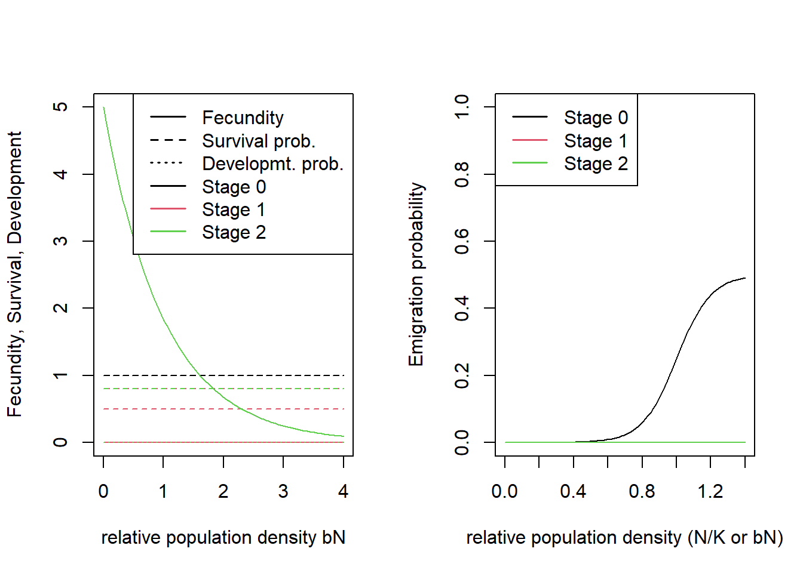
2.2 Initialisation & simulation
We choose to initialise our simulation in all initial patches (specified in initial distribution map; in our case only patch #30) at a density of 10 individuals per hectare, with an equal number of individuals in stages 1 and 2 at their respective minimum age.
# Population is initialised in Patch 30:
init <- Initialise(InitType = 1, # from loaded species distribution map
SpType = 0, # all suitable cells
InitDens = 2, # user-specified density
IndsHaCell = 10,
PropStages = c(0,0.5,0.5),
InitAge = 0)We set the simulation time to 100 years and 20 replicates, and set the output types to write the files for population, occupancy and range data every year.
sim <- Simulation(Simulation = 0,
Replicates = 20,
Years = 100,
OutIntPop = 1,
OutIntOcc = 1,
OutIntRange = 1)As before, we need to stitch all modules together to a parameter master. Within RSsim(), we can also set a seed for the random number generator to make our results reproducible:
s <- RSsim(batchnum = 3, land = land, demog = demo, dispersal = disp, simul = sim, init = init, seed = 324135)Run the simulation:
RunRS(s, dirpath)2.3 Analyse output
To analyse the simulation output, we first plot the meta-population results. Note here that - in contrast to the cell-based model from exercise 1 - the plotted occupancy refers to occupied patches rather than cells.
par(mfrow=c(1,2))
plotAbundance(s, dirpath)
plotOccupancy(s, dirpath)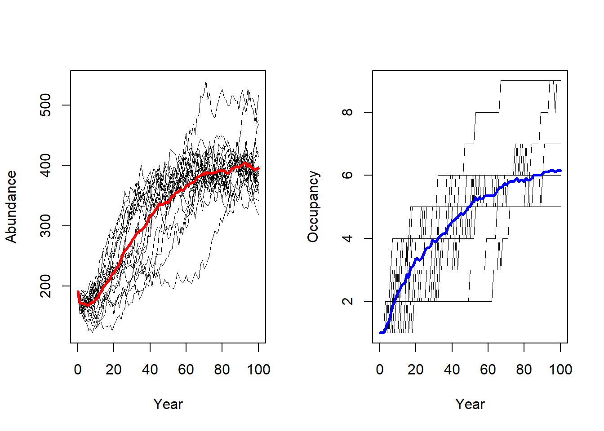
In order to create occupancy maps, we first plot the landscape with the suitable patches in green and the initial patch in red. This color scheme was also used in Fig. 3a of Bocedi et al. (2014).
# We have initiated the population in the patch with ID=30. We highlight this in the map.
values(patch30)[values(patch30)<1] <- NA
values(patch)[values(patch)<1] <- NA
levelplot(landsc, margin=F, scales=list(draw=FALSE),at=seq(.5,7.5,by=1), colorkey=F,
col.regions = rev(brewer.pal(n = 7, name = "Greys") )) +
levelplot(patch, margin=F, scales=list(draw=FALSE), col.regions="green4") +
layer(sp.polygons(rasterToPolygons(patch30, dissolve=T), fill=NA, col='red',lwd=2))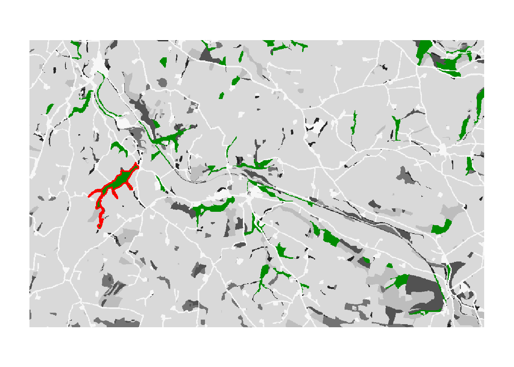
# Store underlying landscape map display for later:
bg <- function(main=NULL){
levelplot(landsc, margin=F, scales=list(draw=FALSE),at=seq(.5,7.5,by=1), colorkey=F,
col.regions = rev(brewer.pal(n = 7, name = "Greys") ), main=main)
}To reproduce Fig. 3b of Bocedi et al. (2014), we map the mean occupancy probability for each patch in year 100 (left panel in the paper) as well as the mean time to colonisation (right panel), both calculated over the 20 replicates. We can use the built-in function ColonisationStats() for this. It calculates the mean occupancy probability of given years as well as the time to colonisation for all replicates:
col_stats_a <- ColonisationStats(s, dirpath, years = 100, maps = T)
# mean occupancy probability in year 100
head(col_stats_a$occ_prob)## patch 100
## 1 15 0.30
## 2 17 0.25
## 3 18 0.00
## 4 20 0.30
## 5 23 1.00
## 6 24 1.00# time to colonisation
head(col_stats_a$col_time)## patch rep.0 rep.1 rep.2 rep.3 rep.4 rep.5 rep.6 rep.7 rep.8 rep.9 rep.10
## 1 15 57 NA NA NA NA NA 44 24 94 NA NA
## 2 17 48 NA NA NA NA NA NA 71 90 NA NA
## 3 18 81 NA NA NA NA NA NA NA NA NA NA
## 4 20 31 NA NA NA NA NA 76 8 56 NA NA
## 5 23 21 48 59 35 30 63 71 67 67 38 45
## 6 24 10 20 41 16 6 40 5 29 50 19 21
## rep.11 rep.12 rep.13 rep.14 rep.15 rep.16 rep.17 rep.18 rep.19
## 1 77 80 98 NA NA NA NA NA NA
## 2 33 77 NA NA NA NA 75 NA NA
## 3 NA NA NA NA NA NA NA NA NA
## 4 50 65 86 NA NA 54 NA NA NA
## 5 37 51 54 26 47 33 77 36 41
## 6 20 35 36 9 30 12 26 3 21For mapping the results, we can use the optional raster output: If enabled, the function ColonisationStats() returns a raster stack with the mean occupancy probabilities of the given years as well as a raster with the mean time to colonisation over all replicates. We plot these maps on top of our landscape:
# map occupancy probability
mycol_occprob <- colorRampPalette(c('blue','orangered','gold'))
levelplot(col_stats_a$map_occ_prob, margin=F, scales=list(draw=FALSE), at=seq(0,1,length=11), col.regions=mycol_occprob(11))
# map occupancy probability on landscape background. For this, we first define a colorkey function
col.key <- function(mycol, at, space='bottom',pos=0.05, height=0.6, width=1) {
key <- draw.colorkey(
list(space=space, at=at, height=height, width=width,
col=mycol)
)
key$framevp$y <- unit(pos, "npc")
return(key)
}
bg() + levelplot(col_stats_a$map_occ_prob, margin=F, scales=list(draw=FALSE), at=seq(0,1,length=11), col.regions=mycol_occprob(11))
grid.draw(col.key(mycol_occprob(11),at=seq(0,1,length=11)))
# map colonisation time
mycol_coltime <- colorRampPalette(c('orangered','gold','yellow','PowderBlue','LightSeaGreen'))
levelplot(col_stats_a$map_col_time, margin=F, scales=list(draw=FALSE), at=c(-9,seq(-.001,100,length=11)), col.regions=c('blue',mycol_coltime(11)))# map colonisation time on landscape background
bg() + levelplot(col_stats_a$map_col_time, margin=F, scales=list(draw=FALSE), at=c(-9,seq(-.001,100,length=11)), col.regions=c('blue',mycol_coltime(11)))
grid.draw(col.key(c('blue',mycol_coltime(11)), c(-9,seq(-.001,100,length=11))))
3 Scenario b: females settle independent of males
This experiment was designed to provide an example of how the dispersal behaviour of the species and the specification of settlement rules can change the estimated connectivity of a habitat network. We will relax the mating requirement a little by making it sex-dependent and only setting it for males. This means that female dispersers will settle in suitable patches regardless of males, while males settle only when finding a female.
# Change Settlement rules
disp_b <- Dispersal(Emigration = Emigration(DensDep=T, StageDep=T,
EmigProb = cbind(0:2,c(0.5,0,0),c(10.0,0,0),c(1.0,0,0)) ),
Transfer = SMS(PR=5, DP=10, Costs = c(1,1,3,5,10,20,50), StepMort = 0.01),
Settlement = Settlement(FindMate = c(F,T), SexDep=T, Settle=cbind(c(0,1)) ) )
# Update simulation
sim_b <- Simulation(Simulation = 1,
Replicates = 20,
Years = 100,
OutIntPop = 1,
OutIntOcc = 1,
OutIntRange = 1)
# Update parameter master
s_b <- s + disp_b + sim_b# run simulation
RunRS(s_b, dirpath)Now, let’s post-process the simulation results and plot the maps.
# Get colonisation stats
col_stats_b <- ColonisationStats(s_b, dirpath, years = 100, maps = T)
# Map occupancy probabilities:
bg() + levelplot(col_stats_b$map_occ_prob, margin=F, scales=list(draw=FALSE), at=seq(0,1,length=11), col.regions=mycol_occprob(11))
grid.draw(col.key(mycol_occprob(11),at=seq(0,1,length=11)))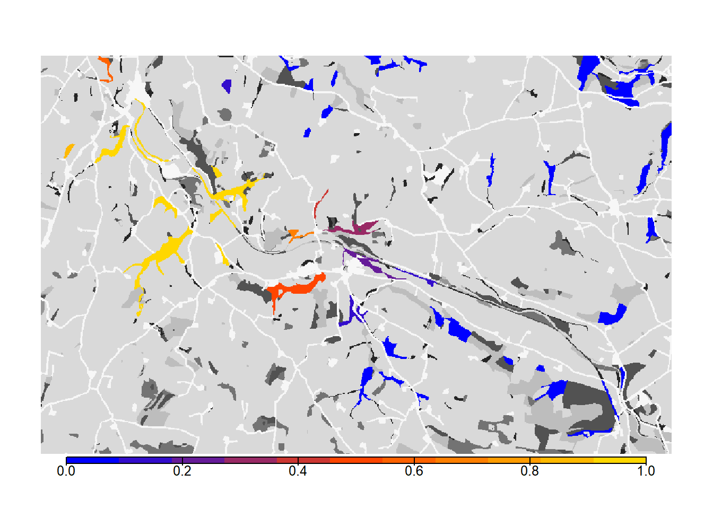
# map colonisation time + background
bg() + levelplot(col_stats_b$map_col_time, margin=F, scales=list(draw=FALSE), at=c(-9,seq(-.001,100,length=11)), col.regions=c('blue',mycol_coltime(11)))
grid.draw(col.key(c('blue',mycol_coltime(11)), c(-9,seq(-.001,100,length=11))))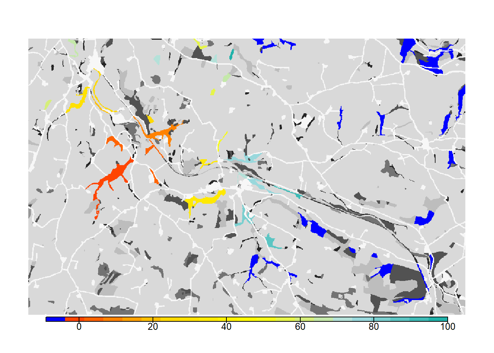
From both the visualisation and the results, we see that relaxing the mate-finding rules substantially increased the number of occupied patches, their probability of occupancy and the mean time to colonisation. This results in higher functional connectivity of the woodland network over 100 years.
4 Scenario c: asexual / female-only model
Here we change the demography module to represent a female-only model. This change also has important consequences for the dispersal process and potential implications for patterns of colonisation across a landscape. Female-only models assume that males are not limiting, and that the population dynamics are driven only by females. It also means that sexes are not modelled explicitly and it is not possible to account for behaviours like mate-finding in the settlement decisions; females will settle in suitable habitat patches and then will automatically be able to attempt reproduction.
The stage-structure of the model remains the same apart from accounting for the female-only case. In particular, in female-only models, we ignore the male part of the population and offspring. Therefore, we set the fecundity of stage 3 to 2.5 instead of 5.0 and the demographic density dependence 1/b (K_or_DensDep) to 5 instead of 10. Sex-dependent settlement options are no longer available.
# Change demographic density dependence to half its value of the sexual model
land_c <- ImportedLandscape(LandscapeFile = "landscape_10m_batch.txt",
PatchFile = "woodland_1ha_patchIDs.txt",
Resolution = 10,
Nhabitats = 7,
K_or_DensDep = c(5, rep(0,6)),
SpDistFile = "patch30.txt",
SpDistResolution = 10)
# Change demography settings
stg_c <- StageStructure(Stages=3,
TransMatrix=matrix(c(0, 1, 0, 0, 0.1, 0.4, 2.5, 0, 0.8), nrow = 3, byrow = F),
MaxAge=1000,
SurvSched=2,
FecDensDep=T)
demo_c <- Demography(StageStruct = stg_c,
ReproductionType = 0) # female-only model
# Remove settlement rules
disp_c <- Dispersal(Emigration = Emigration(DensDep=T, StageDep=T,
EmigProb = cbind(0:2,c(0.5,0,0),c(10.0,0,0),c(1.0,0,0)) ),
Transfer = SMS(PR=5, DP=10, Costs = c(1,1,3,5,10,20,50), StepMort = 0.01),
Settlement = Settlement()
)
# Update simulation
sim_c <- Simulation(Simulation = 2,
Replicates = 20,
Years = 100,
OutIntPop = 1,
OutIntOcc = 1,
OutIntRange = 1)
# parameter master
s_c <- RSsim(batchnum = 3, land = land_c, demog = demo_c, dispersal = disp_c, simul = sim_c, init = init, seed = 48263)RunRS(s_c, dirpath)Process the output and plot the occupancy maps:
# Get colonisation stats
col_stats_c <- ColonisationStats(s_c, dirpath, years = 100, maps = T)
# Map occupancy probabilities:
bg() + levelplot(col_stats_c$map_occ_prob, margin=F, scales=list(draw=FALSE), at=seq(0,1,length=11), col.regions=mycol_occprob(11))
grid.draw(col.key(mycol_occprob(11),at=seq(0,1,length=11)))# Map colonisation time + background
bg() + levelplot(col_stats_c$map_col_time, margin=F, scales=list(draw=FALSE), at=c(-9,seq(-.001,100,length=11)), col.regions=c('blue',mycol_coltime(11)))
grid.draw(col.key(c('blue',mycol_coltime(11)), c(-9,seq(-.001,100,length=11))))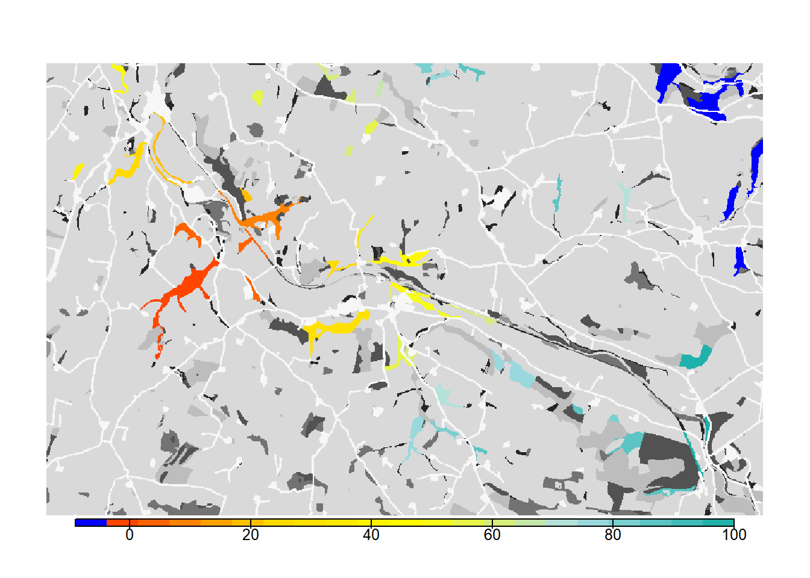
As we see from the results, the asexual model without mate finding as settlement rule leads to a drastic increase in the overall occupancy of the habitat network after 100 years.
5 Scenario d: habitat-specific per-step mortality
In this last simulation, we will demonstrate how RangeshiftR can incorporate more complexity in the way that movement is modelled. We relax the unrealistic assumption that the per-step mortality is constant across all land-cover types, and assign different mortality values to each habitat. To set up this simulation, we use the parameters from scenario a) and only add a modified transfer module. Here, we define StepMort as habitat-dependent by providing a vector with mortality probabilities for each land cover type.
# Update Transfer sub-module within the dispersal module
disp_d <- disp + SMS(PR=5, DP=10, Costs = c(1,1,3,5,10,20,50),
StepMort = c(0,0,0,0.01,0.01,0.02,0.05)
)
# Update simulation
sim_d <- Simulation(Simulation = 3,
Replicates = 20,
Years = 100,
OutIntPop = 1,
OutIntOcc = 1,
OutIntRange = 1)
# Use parameter master from a) and add new transfer module
s_d <- s + disp_d + sim_dRun the simulation:
RunRS(s_d, dirpath)Process and map results:
# Get colonisation stats
col_stats_d <- ColonisationStats(s_d, dirpath, years = 100, maps = T)
# Map occupancy probabilities:
bg() + levelplot(col_stats_d$map_occ_prob, margin=F, scales=list(draw=FALSE), at=seq(0,1,length=11), col.regions=mycol_occprob(11))
grid.draw(col.key(mycol_occprob(11),at=seq(0,1,length=11)))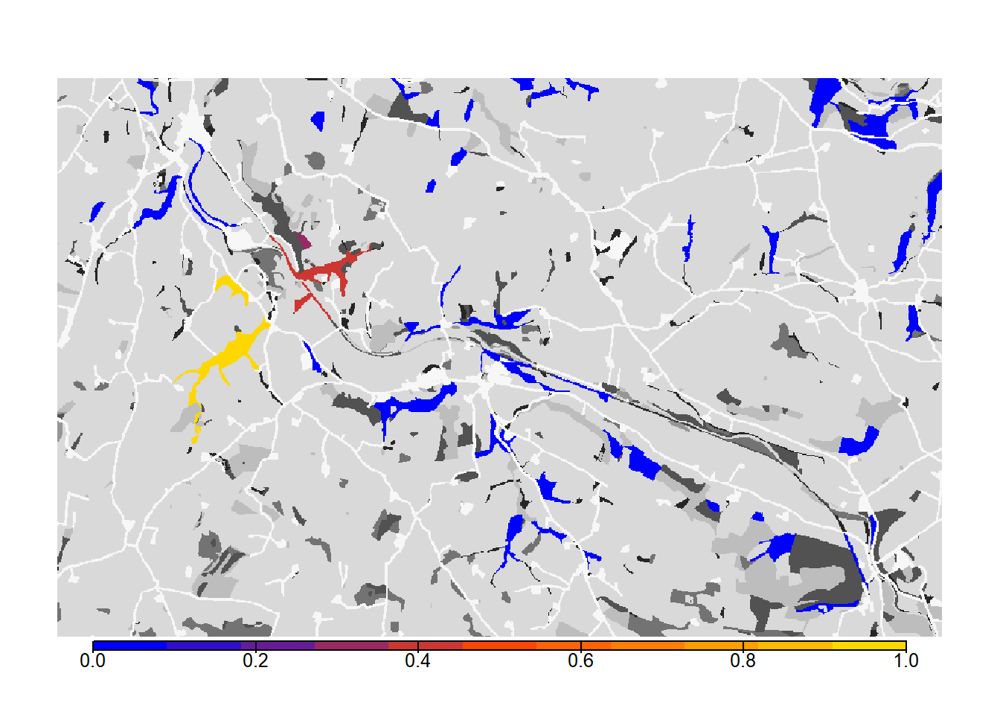
# map colonisation time + background
bg() + levelplot(col_stats_d$map_col_time, margin=F, scales=list(draw=FALSE), at=c(-9,seq(-.001,100,length=11)), col.regions=c('blue',mycol_coltime(11)))
grid.draw(col.key(c('blue',mycol_coltime(11)), c(-9,seq(-.001,100,length=11))))
We see that such small changes in the per-step mortality, in interaction with the landscape structure, make a big difference in the results, in this case decreasing the functional connectivity of the network.
6 Scenario comparison
Let’s plot all maps next to each other.
# Plot occupancy probabilities for all scenarios
occ_a <- bg(main="Scenario A") + levelplot(col_stats_a$map_occ_prob, margin=F, scales=list(draw=FALSE), at=seq(0,1,length=11), col.regions=mycol_occprob(11))
occ_b <- bg(main="Scenario B") + levelplot(col_stats_b$map_occ_prob, margin=F, scales=list(draw=FALSE), at=seq(0,1,length=11), col.regions=mycol_occprob(11))
occ_c <- bg(main="Scenario C") + levelplot(col_stats_c$map_occ_prob, margin=F, scales=list(draw=FALSE), at=seq(0,1,length=11), col.regions=mycol_occprob(11))
occ_d <- bg(main="Scenario D") + levelplot(col_stats_d$map_occ_prob, margin=F, scales=list(draw=FALSE), at=seq(0,1,length=11), col.regions=mycol_occprob(11))
grid.arrange(occ_a,occ_b,occ_c,occ_d, ncol=2)
grid.draw(col.key(mycol_occprob(11),at=seq(0,1,length=11), space='right',pos=0.5))
# Plot colonisation times for all scenarios
col_a <- bg(main="Scenario A") + levelplot(col_stats_a$map_col_time, margin=F, scales=list(draw=FALSE), at=c(-9,seq(-.001,100,length=11)), col.regions=c('blue',mycol_coltime(11)))
col_b <- bg(main="Scenario B") + levelplot(col_stats_b$map_col_time, margin=F, scales=list(draw=FALSE), at=c(-9,seq(-.001,100,length=11)), col.regions=c('blue',mycol_coltime(11)))
col_c <- bg(main="Scenario C") + levelplot(col_stats_c$map_col_time, margin=F, scales=list(draw=FALSE), at=c(-9,seq(-.001,100,length=11)), col.regions=c('blue',mycol_coltime(11)))
col_d <- bg(main="Scenario D") + levelplot(col_stats_d$map_col_time, margin=F, scales=list(draw=FALSE), at=c(-9,seq(-.001,100,length=11)), col.regions=c('blue',mycol_coltime(11)))
grid.arrange(col_a,col_b,col_c,col_d, ncol=2)
grid.draw(col.key(c('blue',mycol_coltime(11)), c(-9,seq(-.001,100,length=11)), space='right',pos=0.5))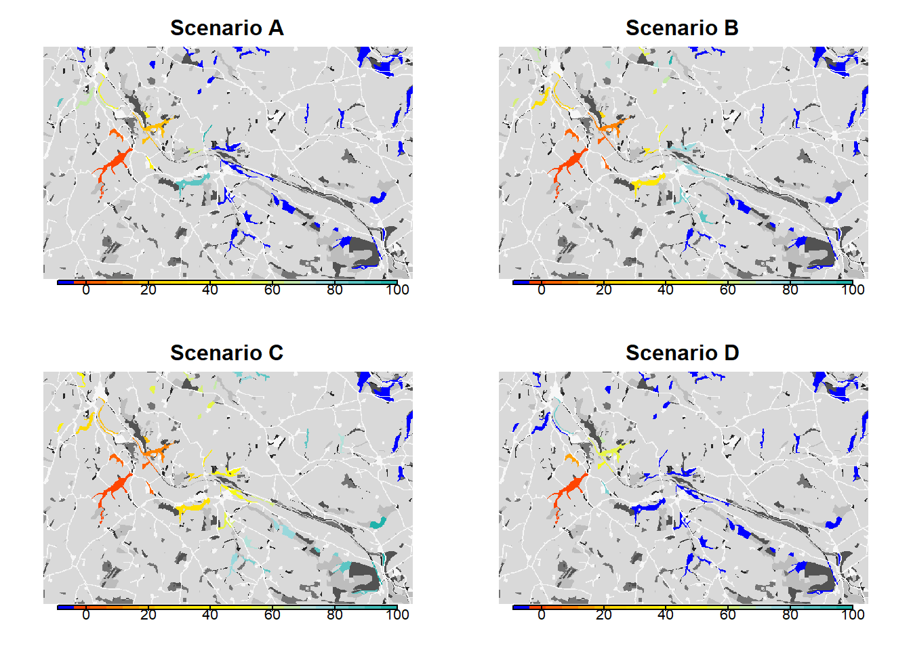
7 Dispersal heatmap
As an additional tool to analyse the connectivity of a landscape and to assess how the matrix is used by dispersing individuals, the option to output a dispersal heatmap is provided (available only in case of SMS as the transfer method). In this section, we re-run scenario c) as an example to show how to create and plot such a heatmap.
We use an alternative option for the initialisation of the population. Instead of providing a species distribution map, a text file can be given that specifies a list of initial patches (or cells, in a cell-based model) and initial local populations. This text file must contain a specific list of columns that also depend on your model settings (please see ?Initialise). For sexual models, you need to include the column “Sex”; for stage-structured models, you need to include the columns “Age” and “Stage”. For the correct format of the initial individuals file, please refer to the documentation and the example file given with this tutorial.
The corresponding initialisation module is specified like this:
# alternative initialisation in patch 30:
init_alt <- Initialise(InitType = 2, # = from initial individuals list file
InitIndsFile = "initial_inds_c.txt")The output of the SMS heatmaps is enabled in the simulation module using the parameter SMSHeatMap.
# update simulation module
sim_c2 <- Simulation(SMSHeatMap = T,
Simulation = 4,
Replicates = 20,
Years = 100,
OutIntPop = 0,
OutIntRange = 0)With these changes and all other modules from scenario c) as defined above, we create the modified parameter master and run the simulation.
# parameter master
s_c2 <- s_c+ sim_c2RunRS(s_c2, dirpath)For each replicate, we now obtain an SMS heatmap that is saved in the folder ‘Output_Maps’ as an ASCII raster file. The heatmap values represent the number of visits by a dispersing individual to each non-habitat cell. That is, during the dispersal phase each step that was taken by any individual increases the counter of the cell in which this step ended. Thus, the resulting dispersal heatmap can be used to assess those parts of the landscape matrix that are frequently used for dispersal, whether it was successful or not.
Let’s first look at one replicate only and plot it:
levelplot(raster(paste0(dirpath,"Output_Maps/Batch3_Sim4_Land1_Rep1_Visits.txt")),
par.settings=BTCTheme(), colorkey=T, margin=F, scales=list(draw=FALSE))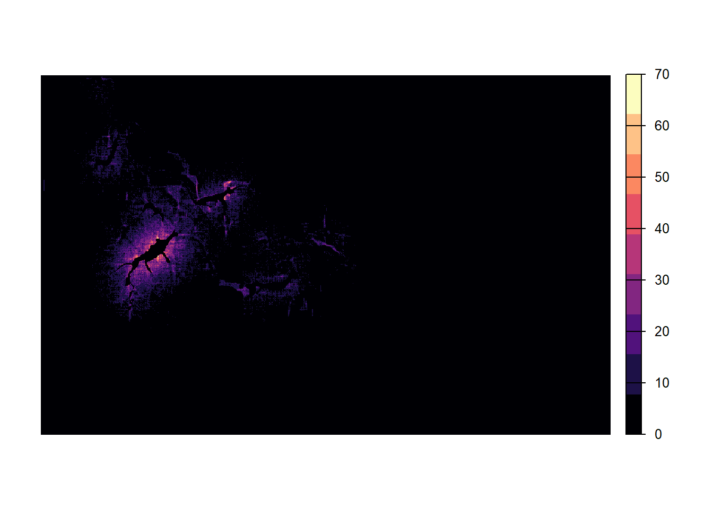
The matrix around the initial patch and the first colonised patches appears thoroughly explored. Further away from the initial patch, the number of visits decreases and parts of individual dispersal trajectories are discernible.
Because movement is stochastic, the number of visits per cell and the colonisation of empty patches are different for each replicate. In order to take into account this variance, we average over all replicates and plot the resulting heatmap:
# create a raster stack with all replicates as layers
heatmaps_stack <- stack()
for(rep in 0:(s_c2@simul@Replicates-1)){
heatmaps_stack <- addLayer(heatmaps_stack,
paste0(dirpath, "Output_Maps/Batch",
s_c2@control@batchnum, "_Sim",
s_c2@simul@Simulation, "_Land",
s_c2@land@LandNum,"_Rep",rep ,"_Visits.txt"))
}
# average over all layers
heatmaps_mean <- stackApply(heatmaps_stack, indices=1, fun=mean)We create a non-linear color scale, in which the color changes more rapidly for small numbers of visits than higher ones:
# create exponential color scale
res <- 20
exp <- 3
lim <- max(values(heatmaps_mean),na.rm = T)
my.at <- seq(1,lim^(1/exp),length.out=res)^exp
levelplot(heatmaps_mean,
col.regions=hcl.colors(res, "Inferno", rev = T),
at = my.at, margin=F, scales=list(draw=FALSE))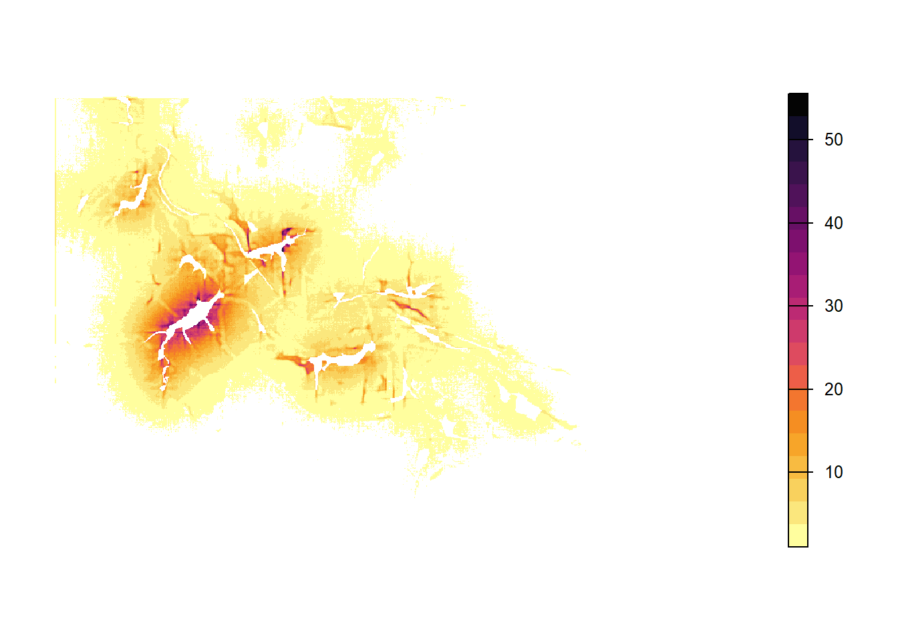
Note that individuals cannot cross the landscape boundaries, so that their paths tend to follow and sometimes accumulate along the borders. To avoid simulation artifacts resulting from this behaviour, there should be sufficient space between relevant habitat patches and the landscape boundaries.
Last, let’s overlay the averaged heatmap on the landscape background. Here, you can nicely see that the movement in the landscape depends a lot on the landscape context and the costs associated to each landcover type.
bg() + levelplot(heatmaps_mean,
col.regions=hcl.colors(res, "Inferno", rev = T, alpha=.8),
at=my.at, margin=F, scales=list(draw=FALSE))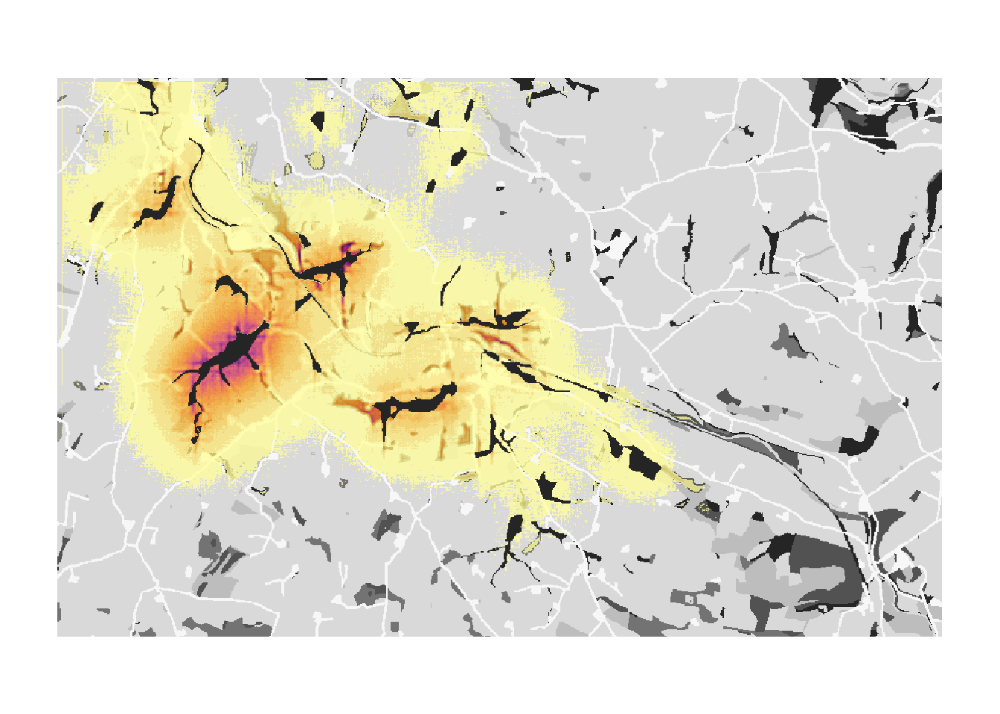
References
Bocedi, G., S.C.F. Palmer, G. Pe’er, R.K. Heikkinen, Y.G. Matsinos, K. Watts, and J.M.J. Travis. 2014. “RangeShifter: A Platform for Modelling Spatial Eco-Evolutionary Dynamics and Species’ Responses to Environmental Changes.” Methods in Ecology and Evolution 5 (4): 388–96. https://doi.org/10.1111/2041-210X.12162.